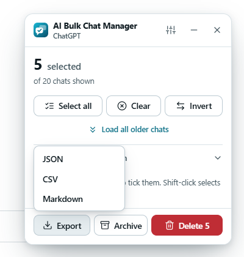
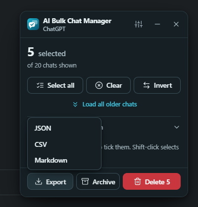

What it does: creates a file from the chats you ticked and saves it to your computer. It changes nothing on the site.
Export step by step#
Tick the chats
Select the chats you want in the list. Export is disabled until at least one chat is ticked. It works on all four sites.
Open the Export menu
Click Export in the panel. A small menu opens with three choices.
Choose a format
Click JSON, CSV or Markdown. Your browser saves the file and the panel shows a message such as Exported 5 chats as Markdown.


Press Esc to close the menu without exporting.
What is in the file#
Each exported chat has three things: its title, its full link (starting with https://) and its id. The file also records the site name and the time of the export.
The file never contains your conversation text. The extension does not read conversations, only the chat list that the sidebar shows.
The three formats#
| Format | Use it for | What it looks like |
|---|---|---|
| JSON | Scripts and other programs. | An object with exportedAt, site, count and a chats list. Each chat has title, url and id. |
| CSV | Spreadsheets such as Excel. | A header line title,url,id, then one line per chat. The file starts with a byte order mark so Excel reads non-Latin titles correctly. A title that begins with =, +, - or @ gets a leading apostrophe so a spreadsheet does not run it as a formula. |
| Markdown | Notes apps and readable lists. | A heading with the site name and the count, then one bullet per chat as a link: - [Title](link). |
File name and location#
Files are named ai-chats-<site>-<date and time>.<format>, for example ai-chats-chatgpt-2026-10-08T12-30-00.json. Your browser decides where the file goes. By default that is your downloads folder. If you set your browser to ask where to save each file, it asks.
The file is made on your device and is not uploaded anywhere.
Tips#
- Export before a big delete. The file is a record of titles and links, not a backup of the conversations. After you delete a chat, its link stops working.
- Use Load all older chats first if you want your whole history in the file.
Edit this page on GitHub ↗ · Last updated 2026-10-08